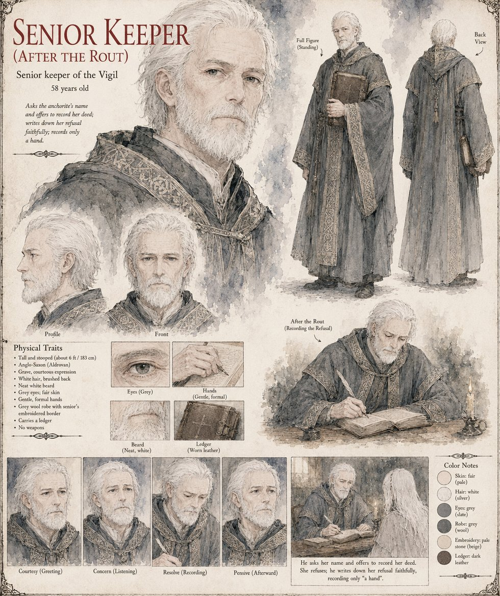

The Senior Keeper (After the Rout)
Senior keeper of the Vigil · 58 years old
The senior keeper present on the evening of the rout, among the first of the Vigil to reach the Anchorite after the last of Corvane's retreat has cleared the horizon. The keepers ask her name, and she gives none. They ask, with a gentleness the order's own founder would have recognized, whether she wishes the Vigil to record what she did, in whatever form she finds least uncomfortable: a title, an epithet, even the bare fact of a woman's hand without the woman's name. She declines that too, in language the senior keeper writes down as faithfully as he is able, precisely because it is the only part of the exchange she permits him to keep: that a debt repaid in front of witnesses is not, in her own accounting, any less repaid for going unrecorded, and that she did not lift the sword to be owed anything by anyone for having done it. The order argues the matter in council for the better part of a decade, and keeps its founder's own discipline: the breaking of the eleventh siege is recorded in full, and the hand that broke it is recorded as a hand.
The sheet gives his age as 58 and draws him tall and stooped, about 6'0", with white hair brushed back, a neat white beard, grey eyes, fair skin and a grave, courteous expression, in a grey wool robe with a senior's embroidered border in pale stone, with a worn dark-leather ledger. Its expressions are courtesy (greeting), concern (listening), resolve (recording) and pensive (afterward), and its panels show him writing in the ledger at a candlelit desk, with a long-haired figure seen from behind opposite him. Its caption reads that she refuses, and that he records only “a hand.” The manuscript gives him no description. The sheet's culture line reads Anglo-Saxon (Aldrovan).